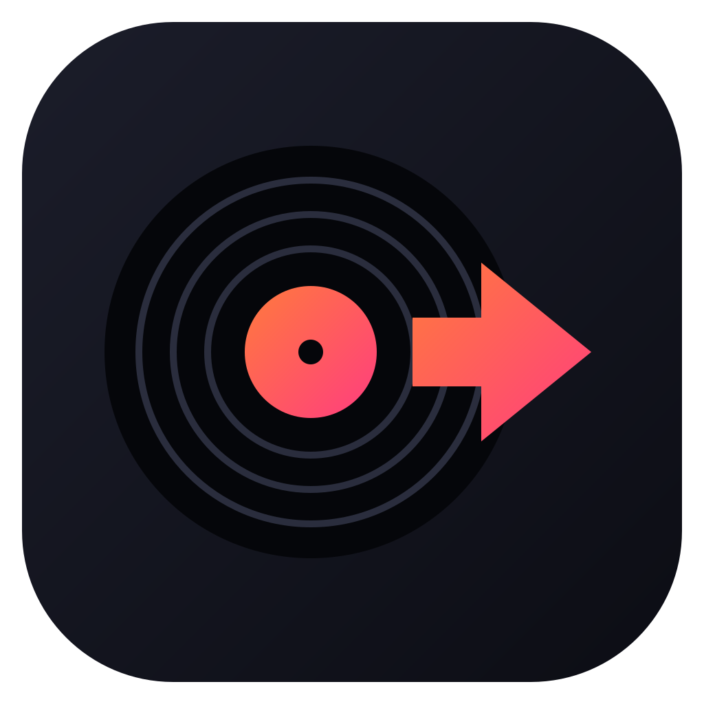

Doble clic en un archivo desde tu explorador, arrástralo aquí o usa Ctrl+O.
0:000:00
Configuración
Carpetas
Cada carpeta raíz muestra sus botones para cualquier track que esté dentro de ella, a cualquier profundidad. El orden de los botones define su tecla: 1, 2, 3…
Escaneo automático
Organización
Atajos
1…90Mover al destinoEspacioPlay / PausaSSaltar sin moverBTrack anterior←→−5 / +5 s (con Shift: 30 s), pasa a manualAPrender / apagar escaneo automático↑↓VolumenCtrl+ZDeshacer último movimientoCtrl+OAbrir archivoF1Acerca de
Acerca de

Osky Audio Player for DJs
Reproductor ligero para escuchar y clasificar miles de tracks a toda velocidad: escaneo automático, forma de onda y un botón (o una tecla) para mandar cada track a su carpeta.
Creado por MoscoDJ
Software libre bajo licencia AGPL-3.0 · Hecho con Tauri, symphonia y rodio